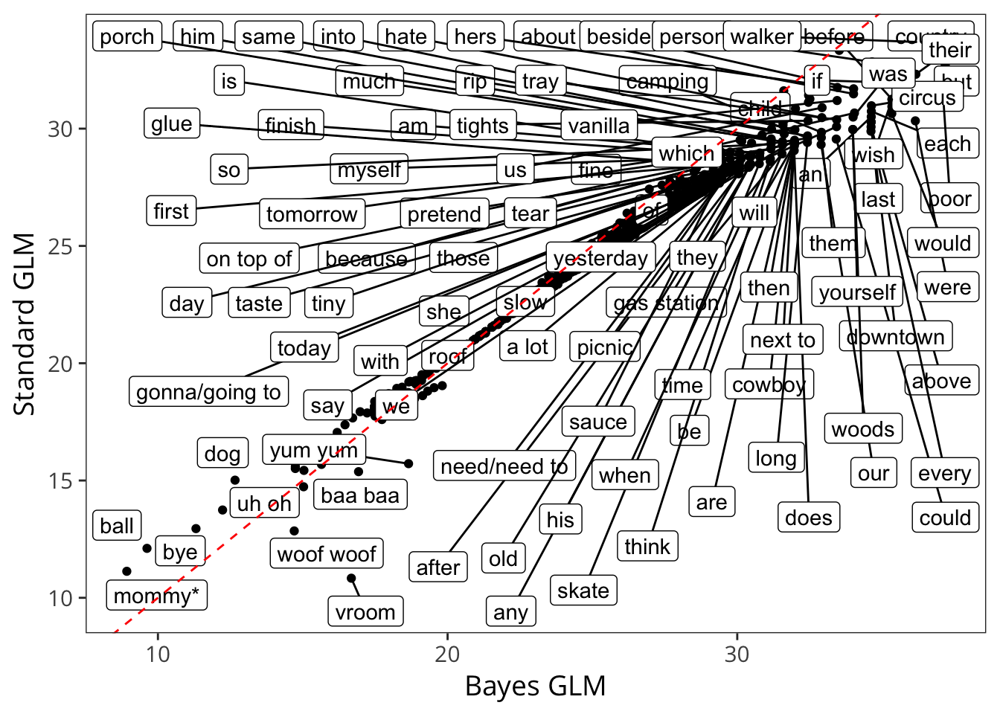
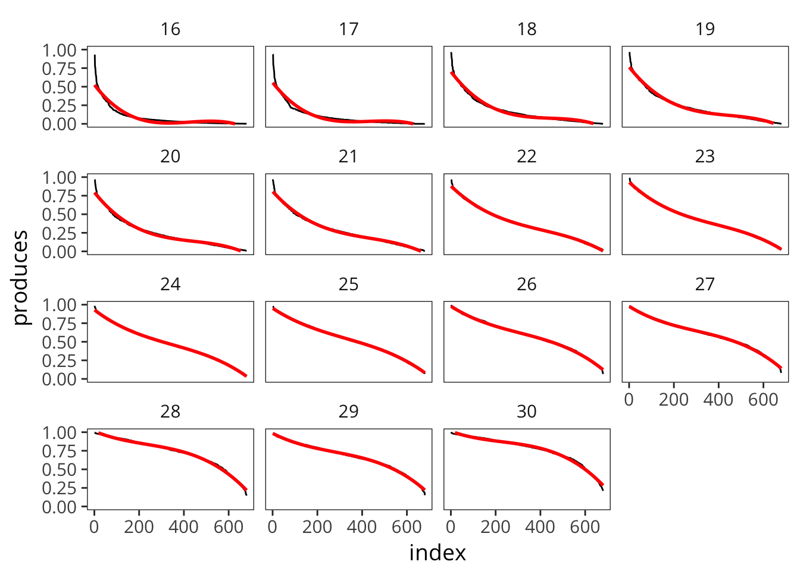
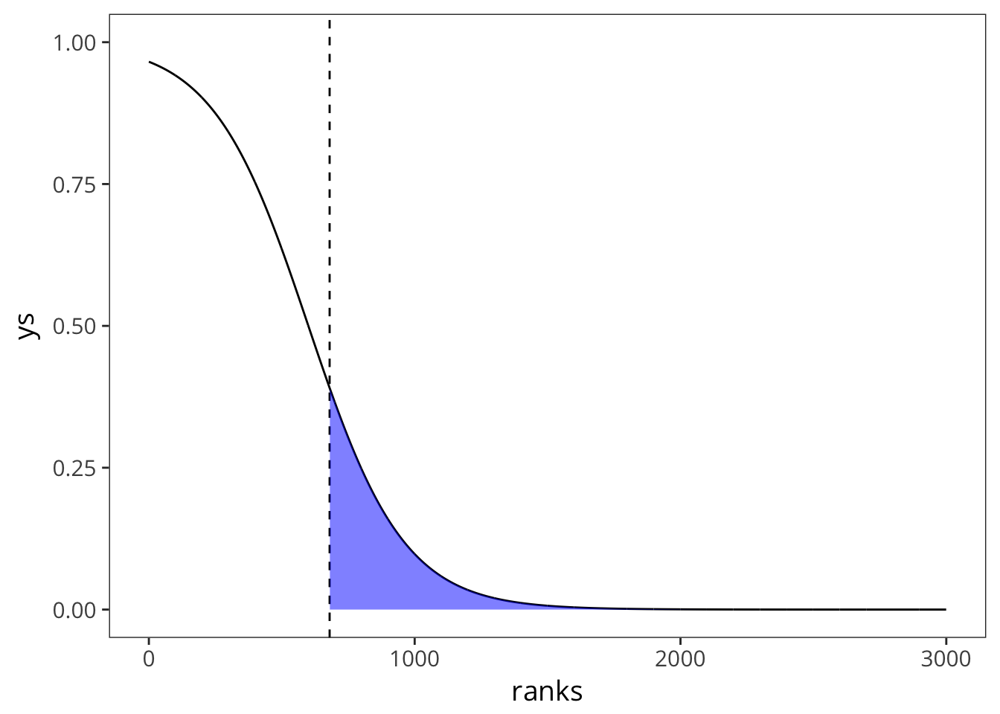
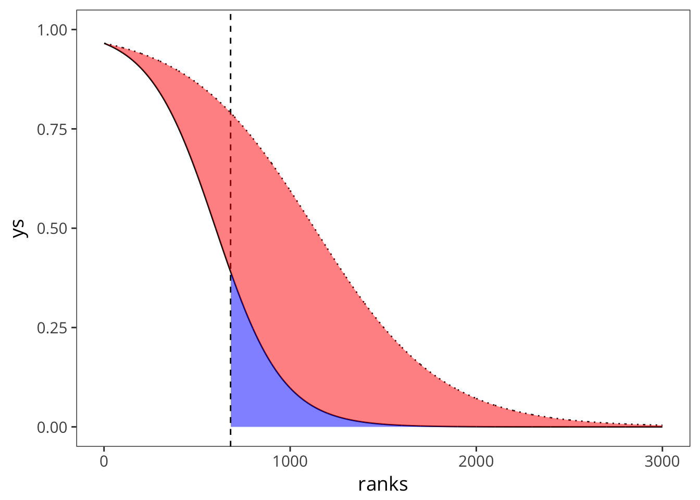

E Estimating Total Vocabulary
First, connect to the Wordbank database and pull out the English WS and WG data.
Now aggregate by item.
Now arrange.
Plot this with a glm sinusoid like in the Mayor & Plunkett (2011) paper.

Try a polynomial fit.

Doesn’t work that well for the younger ages, though looks fine later.
Note age interactions in the stats.
#>
#> Call:
#> glm(formula = produces ~ index * age, family = "binomial", data = ordered)
#>
#> Deviance Residuals:
#> Min 1Q Median 3Q Max
#> -0.50672 -0.09538 -0.01262 0.07183 1.16279
#>
#> Coefficients:
#> Estimate Std. Error z value Pr(>|z|)
#> (Intercept) -4.688e+00 2.839e-01 -16.514 < 2e-16 ***
#> index -7.773e-03 8.480e-04 -9.166 < 2e-16 ***
#> age 2.639e-01 1.252e-02 21.089 < 2e-16 ***
#> index:age 9.147e-05 3.489e-05 2.622 0.00875 **
#> ---
#> Signif. codes: 0 '***' 0.001 '**' 0.01 '*' 0.05 '.' 0.1 ' ' 1
#>
#> (Dispersion parameter for binomial family taken to be 1)
#>
#> Null deviance: 4141.07 on 10199 degrees of freedom
#> Residual deviance: 174.34 on 10196 degrees of freedom
#> AIC: 5981
#>
#> Number of Fisher Scoring iterations: 5E.0.1 Further thoughts on Mayor & Plunkett model
The Mayor & Plunkett (2011) model has two corrections. The first uses the parametric form of the logistic to fill in low-frequency words that are not on the CDI, the second uses the difference between diary study counts and CDI counts to find a multiplier for higher-frequency words that are omitted.
I think there’s a bit of a conceptual issue here, as these two corrections should essentially be the same thing - there are some words that are not on the CDI, and more of these are the low frequency/hard words. So really, it all is a correction for missing words.
Also - the first correction, which depends on the parametric form of the logistic, is much much smaller than the second. Take a look at this.
Equation 3:
\[ p(w_i) = 1 - \frac{1}{1 + e^{\frac{-(i-a)}{b}}} \]

So adding the gray area gives us
\[ V_{corr_1} = b \log (1 + e^(a / b)) \]
but then adding the second correction is just a multiplier on this:
\[ V_{corr_2} = \alpha * V_{corr_1} \]
Note that (strikingly), M&P2011 never give their value of \(\alpha\) in the text. I estimate it below so that I can make an estimate of what correction 2 actually looks like…

So you can see that the second correction dwarfs the first correction in size, and is really based on a few small diary studies.
In sum, I’m worried about this model for a few reasons:
- The distributional form (logit) is clearly not correct, so using this distributional form for extrapolation may have bad consequences.
- The first and second corrections aren’t conceptually distinct: they both concern missing words. Both have to do with the sampling of words on the CDI from the broader vocabulary.
- The second correction, which does most of the work, is - for reasonable reasons of data etc.- assumed to be a strict multiplier, which makes it do a ton of work at the higher end of vocabulary.
Baker, Mark C. 2005. “Mapping the Terrain of Language Learning.” Language Learning and Development 1 (1). Taylor & Francis: 93–129.
Bannard, C., E. Lieven, and M. Tomasello. 2009. “Modeling Children’s Early Grammatical Knowledge.” Proceedings of the National Academy of Sciences 106 (41). National Acad Sciences: 17284.
Bates, Elizabeth. 1976. Language and Context: The Acquisition of Pragmatics. Vol. 13. New York, NY: Academic Press.
Bates, Elizabeth, and J. Goodman. 1999. “On the Emergence of Grammar from the Lexicon.” In The Emergence of Language, edited by Brian Macwhinney. Mahwah, NJ: Lawrence Erlbaum Associates.
Bates, Elizabeth, and Judith C Goodman. 1997. “On the Inseparability of Grammar and the Lexicon: Evidence from Acquisition, Aphasia and Real-Time Processing.” Language and Cognitive Processes 12 (5-6). Taylor & Francis: 507–84.
Bates, Elizabeth, Inge Bretherton, and Lynn Snyder. 1991. From First Words to Grammar: Individual Differences and Dissociable Mechanisms. Vol. 20. Cambridge University Press.
Bates, Elizabeth, Virginia Marchman, Donna Thal, Larry Fenson, Philip Dale, J Steven Reznick, Judy Reilly, and Jeff Hartung. 1994. “Developmental and Stylistic Variation in the Composition of Early Vocabulary.” Journal of Child Language 21 (01). Cambridge Univ Press: 85–123.
Bergelson, Elika, and Daniel Swingley. 2012. “At 6–9 Months, Human Infants Know the Meanings of Many Common Nouns.” Proceedings of the National Academy of Sciences 109 (9). National Acad Sciences: 3253–8.
Berko, J. 1958. “The Child’s Learning of English Morphology.” Word 14: 150–77.
Bloom, L., E. Tinker, and E.K. Scholnick. 2001. “The Intentionality Model and Language Acquisition: Engagement, Effort, and the Essential Tension in Development.” Monographs of the Society for Research in Child Development 66 (4). Blackwell Publishing.
Bloom, P. 2002. How Children Learn the Meanings of Words. Cambridge, MA: MIT Press.
Bornstein, Marc H, and O Maurice Haynes. 1998. “Vocabulary Competence in Early Childhood: Measurement, Latent Construct, and Predictive Validity.” Child Development 69 (3). Wiley Online Library: 654–71.
Bornstein, Marc H, Linda R Cote, Sharone Maital, Kathleen Painter, Sung-Yun Park, Liliana Pascual, Marie-Germaine Pêcheux, Josette Ruel, Paola Venuti, and Andre Vyt. 2004. “Cross-Linguistic Analysis of Vocabulary in Young Children: Spanish, Dutch, French, Hebrew, Italian, Korean, and American English.” Child Development 75 (4). Wiley Online Library: 1115–39.
Braginsky, M., D. Yurovsky, V. A. Marchman, and M. C. Frank. 2015. “Developmental Changes in the Relationship Between Grammar and the Lexicon.” In Proceedings of the 37th Annual Meeting of the Cognitive Science Society.
Braginsky, Mika, Daniel Yurovsky, Virginia A Marchman, and Michael C Frank. n.d. “From Uh-Oh to Tomorrow: Predicting Age of Acquisition for Early Words Across Languages.” In.
Bresnan, J. 2001. Lexical-Functional Syntax. Wiley-Blackwell.
Brown, Roger. 1973. A First Language: The Early Stages. Cambridge, MA: Harvard Universirty Press.
Cartmill, Erica A, Benjamin F Armstrong, Lila R Gleitman, Susan Goldin-Meadow, Tamara N Medina, and John C Trueswell. 2013. “Quality of Early Parent Input Predicts Child Vocabulary 3 Years Later.” Proceedings of the National Academy of Sciences 110 (28). National Acad Sciences: 11278–83.
Caselli, C., Paola Casadio, and Elizabeth Bates. 1999. “A Comparison of the Transition from First Words to Grammar in English and Italian.” Journal of Child Language 26 (01). Cambridge Univ Press: 69–111.
Choi, Soonja, and Alison Gopnik. 1995. “Early Acquisition of Verbs in Korean: A Cross-Linguistic Study.” Journal of Child Language 22 (03). Cambridge Univ Press: 497–529.
Chomsky, N. 1981. “Principles and Parameters in Syntactic Theory.” Explanation in Linguistics: The Logical Problem of Language Acquisition. London: Longman, 1981b, 32–75.
Clark, E.V. 2003. First Language Acquisition. Cambridge, UK: Cambridge University Press.
Dale, Philip S. 2015. “Adaptations, Not Translations!” http://mb-cdi.stanford.edu/Translations2015.pdf.
Dale, Philip S, and Larry Fenson. 1996. “Lexical Development Norms for Young Children.” Behavior Research Methods, Instruments, & Computers 28 (1). Springer: 125–27.
Dale, Philip S, and Melissa Penfold. 2011. “Adaptations of the MacArthur-Bates CDI Into Non-US English Languages.” http://mb-cdi.stanford.edu/documents/AdaptationsSurvey7-5-11Web. pdf.
Dickinson, David K, and Patton O Tabors. 2001. Beginning Literacy with Language: Young Children Learning at Home and School. Paul H Brookes Publishing.
Dunn, Lloyd M, and Leota M Dunn. 2007. Peabody Picture Vocabulary Test. 4th Edition. Parsippany, NJ: AGS Publishing/Pearson Assessments.
Elman, J. L., Elizabeth Bates, M. H. Johnson, A. Karmiloff-Smith, D. Parisi, and K. Plunkett. 1996. Rethinking Innateness: A Connectionist Perspective on Development. Cambridge, MA: MIT Press.
Feldman, Heidi M, Philip S Dale, Thomas F Campbell, D Kathleen Colborn, Marcia Kurs-Lasky, Howard E Rockette, and Jack L Paradise. 2005. “Concurrent and Predictive Validity of Parent Reports of Child Language at Ages 2 and 3 Years.” Child Development 76 (4). Wiley Online Library: 856–68.
Feldman, Heidi M, Christine A Dollaghan, Thomas F Campbell, Marcia Kurs-Lasky, Janine E Janosky, and Jack L Paradise. 2000. “Measurement Properties of the Macarthur Communicative Development Inventories at Ages One and Two Years.” Child Development 71 (2). Wiley Online Library: 310–22.
Fenson, L., P.S. Dale, J.S. Reznick, Elizabeth Bates, D.J. Thal, S.J. Pethick, M. Tomasello, C.B. Mervis, and J. Stiles. 1994. “Variability in Early Communicative Development.” Monographs of the Society for Research in Child Development 59 (5). JSTOR.
Fenson, Larry, Elizabeth Bates, Philip Dale, Judith Goodman, J Steven Reznick, and Donna Thal. 2000. “Reply: Measuring Variability in Early Child Language: Don’t Shoot the Messenger.” Child Development 71 (2). Wiley Online Library: 323–28.
Fenson, Larry, Virginia A. Marchman, D. Thal, P. Dale, J. S. Reznick, and Elizabeth Bates. 2007. MacArthur-Bates Communicative Development Inventories: User’s Guide and Technical Manual. 2nd ed. Baltimore, MD: Brookes Publishing Company.
Fernald, A., and H. Morikawa. 1993. “Common Themes and Cultural Variations in Japanese and American Mothers’ Speech to Infants.” Child Development 64: 637–56. http://www.ncbi.nlm.nih.gov/pubmed/8339686.
Fisher, Cynthia, Yael Gertner, Rose M Scott, and Sylvia Yuan. 2010. “Syntactic Bootstrapping.” Wiley Interdisciplinary Reviews: Cognitive Science 1 (2). Wiley Online Library: 143–49.
Frank, M. C., Mika Braginsky, DANIEL Yurovsky, and Virginia A Marchman. 2016. “Wordbank: An Open Repository for Developmental Vocabulary Data.” Journal of Child Language.
Ganger, Jennifer, and Michael R Brent. 2004. “Reexamining the Vocabulary Spurt.” Developmental Psychology 40 (4). American Psychological Association: 621.
Gillette, J., H. Gleitman, L. Gleitman, and A. Lederer. 1999. “Human Simulations of Vocabulary Learning.” Cognition 73 (2): 135–76.
Gleitman, L. 1990. “The Structural Sources of Verb Meanings.” Language Acquisition, 3–55.
Goldfield, Beverly A, and J Steven Reznick. 1990. “Early Lexical Acquisition: Rate, Content, and the Vocabulary Spurt.” Journal of Child Language 17 (1). Cambridge University Press: 171–83.
Goodman, J.C., P.S. Dale, and P. Li. 2008. “Does Frequency Count? Parental Input and the Acquisition of Vocabulary.” Journal of Child Language 35 (3). Cambridge Univ Press: 515.
Hammer, Carol Scheffner, George Farkas, and Steve Maczuga. 2010. “The Language and Literacy Development of Head Start Children: A Study Using the Family and Child Experiences Survey Database.” Language, Speech, and Hearing Services in Schools 41 (1). ASHA: 70–83.
Hart, B., and T.R. Risley. 1995. Meaningful Differences in the Everyday Experience of Young American Children. Baltimore, MD: Brookes Publishing Company.
Henrich, Joseph, Steven J Heine, and Ara Norenzayan. 2010. “The Weirdest People in the World?” Behavioral and Brain Sciences 33 (2-3): 101–2.
Hidaka, Shohei. 2015. “Estimating the Latent Number of Types in Growing Corpora with Reduced Cost–accuracy Trade-Off.” Journal of Child Language. Cambridge Univ Press, 1–28.
Hills, Thomas T, Josita Maouene, Brian Riordan, and Linda B Smith. 2010. “The Associative Structure of Language: Contextual Diversity in Early Word Learning.” Journal of Memory and Language 63 (3). Elsevier: 259–73.
Hills, Thomas T, Mounir Maouene, Josita Maouene, Adam Sheya, and Linda Smith. 2009. “Longitudinal Analysis of Early Semantic Networks Preferential Attachment or Preferential Acquisition?” Psychological Science 20 (6). SAGE Publications: 729–39.
Hoff, Erika. 2003. “The Specificity of Environmental Influence: Socioeconomic Status Affects Early Vocabulary Development via Maternal Speech.” Child Development 74 (5). Wiley Online Library: 1368–78.
Huttenlocher, J., W. Haight, A. Bryk, M. Seltzer, and T. Lyons. 1991. “Early Vocabulary Growth: Relation to Language Input and Gender.” Developmental Psychology 27 (2): 236–48.
Jordan, Michael I. 2004. “Graphical Models.” Statistical Science 19 (1). Institute of Mathematical Statistics: 140–55.
Jørgensen, Rune Nørgaard, Philip S Dale, Dorthe Bleses, and Larry Fenson. 2010. “CLEX: A cross-linguistic lexical norms database.” Journal of Child Language 37 (02). Cambridge Univ Press: 419–28.
Kristoffersen, Kristian E, Hanne Gram Simonsen, Dorthe Bleses, Sonja Wehberg, Rune Nørgård Jørgensen, Eli Anne Eiesland, and Laila Yvonne Henriksen. 2013. “The Use of the Internet in Collecting Cdi Data–an Example from Norway.” Journal of Child Language 40 (03). Cambridge Univ Press: 567–85.
Lieven, Elena, Dorothé Salomo, and Michael Tomasello. 2009. “Two-Year-Old Children’s Production of Multiword Utterances: A Usage-Based Analysis.” Cognitive Linguistics 20 (3): 481–507.
MacWhinney, B. 2000. The CHILDES Project: Tools for Analyzing Talk. Third Edition. Mahwah, NJ: Lawrence Erlbaum Associates.
Marchman, Virginia A, and Elizabeth Bates. 1994. “Continuity in Lexical and Morphological Development: A Test of the Critical Mass Hypothesis.” Journal of Child Language 21 (2). Cambridge University Press: 339–66.
Marchman, Virginia A, and Philip S Dale. 2017. “3 Assessing Receptive and Expressive Vocabulary in Child Language.” Research Methods in Psycholinguistics and the Neurobiology of Language: A Practical Guide. John Wiley & Sons, 40.
Marchman, Virginia A, and Carmen Martínez-Sussmann. 2002. “Concurrent Validity of Caregiver/Parent Report Measures of Language for Children Who Are Learning Both English and Spanish.” Journal of Speech, Language, and Hearing Research 45 (5). ASHA: 983–97.
Mayor, Julien, and Kim Plunkett. 2011. “A Statistical Estimate of Infant and Toddler Vocabulary Size from Cdi Analysis.” Developmental Science 14 (4). Wiley Online Library: 769–85.
———. 2014. “Shared Understanding and Idiosyncratic Expression in Early Vocabularies.” Developmental Science 17 (3). Wiley Online Library: 412–23.
Nelson, Katherine. 1973. “Structure and Strategy in Learning to Talk.” Monographs of the Society for Research in Child Development. JSTOR, 1–135.
Nosek, Brian A, Frederick L Smyth, Natarajan Sriram, Nicole M Lindner, Thierry Devos, Alfonso Ayala, Yoav Bar-Anan, et al. 2009. “National Differences in Gender–science Stereotypes Predict National Sex Differences in Science and Math Achievement.” Proceedings of the National Academy of Sciences 106 (26). National Acad Sciences: 10593–7.
Piantadosi, Steven T, and Edward Gibson. 2014. “Quantitative Standards for Absolute Linguistic Universals.” Cognitive Science 38 (4). Wiley Online Library: 736–56.
Reese, Elaine, and Stephanie Read. 2000. “Predictive Validity of the New Zealand Macarthur Communicative Development Inventory: Words and Sentences.” Journal of Child Language 27 (2). Cambridge University Press: 255–66.
Rescorla, Leslie. 1989. “The Language Development Surveya Screening Tool for Delayed Language in Toddlers.” Journal of Speech and Hearing Disorders 54 (4). ASHA: 587–99.
Roberts, Joanne E, Margaret Burchinal, and Meghan Durham. 1999. “Parents’ Report of Vocabulary and Grammatical Development of African American Preschoolers: Child and Environmental Associations.” Child Development 70 (1). Wiley Online Library: 92–106.
Roy, Brandon C, M. C. Frank, Philip DeCamp, Matthew Miller, and Deb Roy. 2015. “Predicting the Birth of a Spoken Word.” Proceedings of the National Academy of Sciences 112 (41). National Acad Sciences: 12663–8.
Schneider, Rose, Daniel Yurovsky, and Mike Frank. 2015. “Large-Scale Investigations of Variability in Children’s First Words.” In CogSci.
Smith, L., and C. Yu. 2008. “Infants Rapidly Learn Word-Referent Mappings via Cross-Situational Statistics.” Cognition 106 (3). Elsevier: 1558–68.
Tardif, Twila, Paul Fletcher, Weilan Liang, Zhixiang Zhang, Niko Kaciroti, and Virginia A Marchman. 2008. “Baby’s First 10 Words.” Developmental Psychology 44 (4). American Psychological Association: 929.
Tardif, Twila, Susan A Gelman, and Fan Xu. 1999. “Putting the noun Bias in Context: A Comparison of English and Mandarin.” Child Development 70 (3). Wiley Online Library: 620–35.
Thal, Donna, Donna Jackson-Maldonado, and Dora Acosta. 2000. “Validity of a Parent-Report Measure of Vocabulary and Grammar for Spanish-Speaking Toddlers.” Journal of Speech, Language, and Hearing Research 43 (5). ASHA: 1087–1100.
Tincoff, Ruth, and Peter W Jusczyk. 1999. “Some Beginnings of Word Comprehension in 6-Month-Olds.” Psychological Science 10 (2). SAGE Publications Sage CA: Los Angeles, CA: 172–75.
Tomasello, M. 2003. Constructing a Language: A Usage-Based Theory of Language Acquisition. Harvard University Press.
Tomasello, Michael, and Carolyn B Mervis. 1994. “The Instrument Is Great, but Measuring Comprehension Is Still a Problem.” Monographs of the Society for Research in Child Development 59 (5). Wiley Online Library: 174–79.
Weisleder, Adriana, and Anne Fernald. 2013. “Talking to Children Matters Early Language Experience Strengthens Processing and Builds Vocabulary.” Psychological Science 24 (11). Sage Publications: 2143–52.
Yu, C., and L.B. Smith. 2007. “Rapid Word Learning Under Uncertainty via Cross-Situational Statistics.” Psychological Science 18 (5). Citeseer: 414–20.